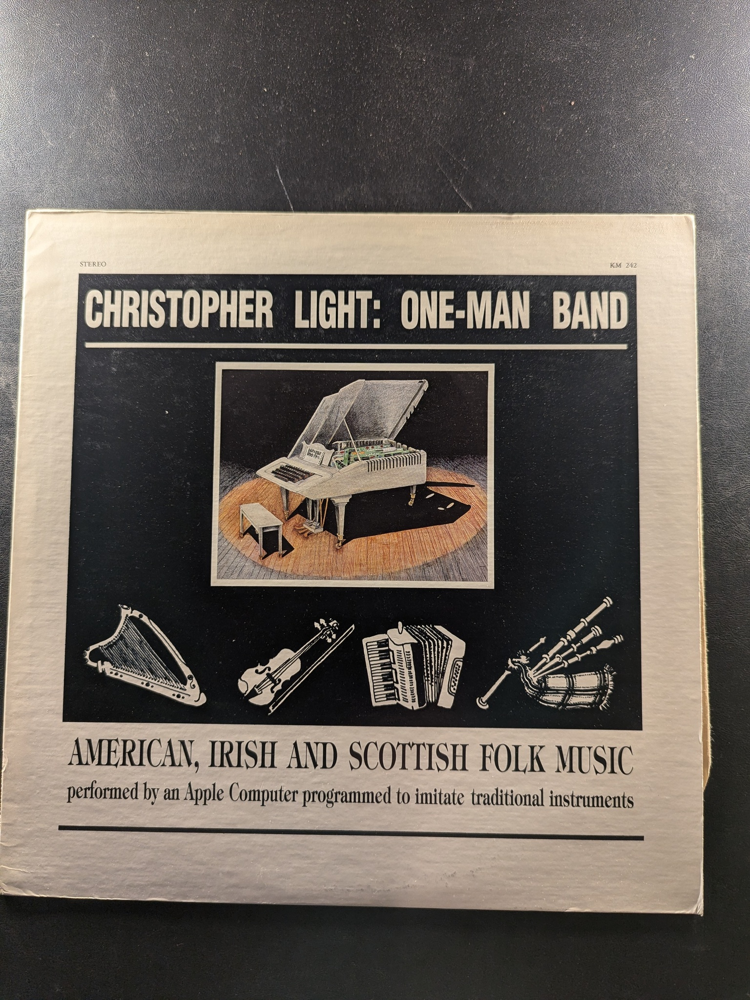
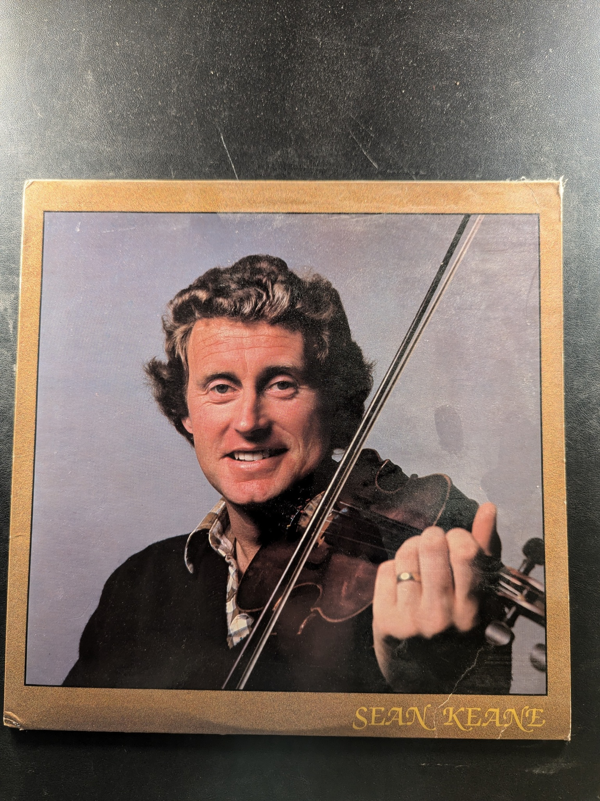

Fresh Takes
John Whelan & Eileen Ivers
The Rising Fawn String Ensemble
Norman Blake
Planxty
Planxty
Unknown Unknown
The Planxty Collection
Planxty
Shanachie
Ar Seizh Avel / On Seven Winds
Kornog
Molloy, Brady, Peoples
Matt Molloy, Paul Brady, Tommy Peoples
Tristan de Lyonesse
Unknown
PDU Pld A 6062
The Iron Man
Tommy Peoples with Daithi Sproule
The Chieftains 2
The Chieftains
Claddagh Records CC2

Sweeney's Dream: Fiddle Tunes from County Sligo, Ireland
Kevin Burke
Folkways Records FW 8876
Dancing Feet
The Tannahill Weavers
Green Linnet Records SIF 1071
West Meets East
Yehudi Menuhin & Ravi Shankar
Angel 36418
Jean Ritchie at Home
Jean Ritchie
Pacific Cascade Records LPL 7026
Battlefield Band
Battlefield Band
Unknown Unknown
One-Man Band
Christopher Light
KM 242
So Many Partings
Silly Wizard
Traditional Music of Ireland: Fiddle and Bouzouki
Frankie Gavin and Alec Finn
the corner house
The Irish Tradition
Unknown
Sean Keane
Unknown Unknown
The Chieftains 3
The Chieftains
Claddagh Records CC7
The Chieftains
The Chieftains
Irish Traditional Instrumental Music from the East Coast of America Volume 1
Various Artists
Reanold 6066
Clannad 2
Clannad
Shanachie
{kind=link}
{kind=link}
{kind=link}
{kind=link}
{kind=link}
{kind=link}
{kind=link}
{kind=link}
{kind=link}
{kind=link}
{kind=link}
{kind=link}
{kind=link}
{kind=link}
{kind=link}
{kind=link}
{kind=link}
{kind=link}
{kind=link}
{kind=link}
{kind=link}
{kind=link}
{kind=link}
{kind=link}